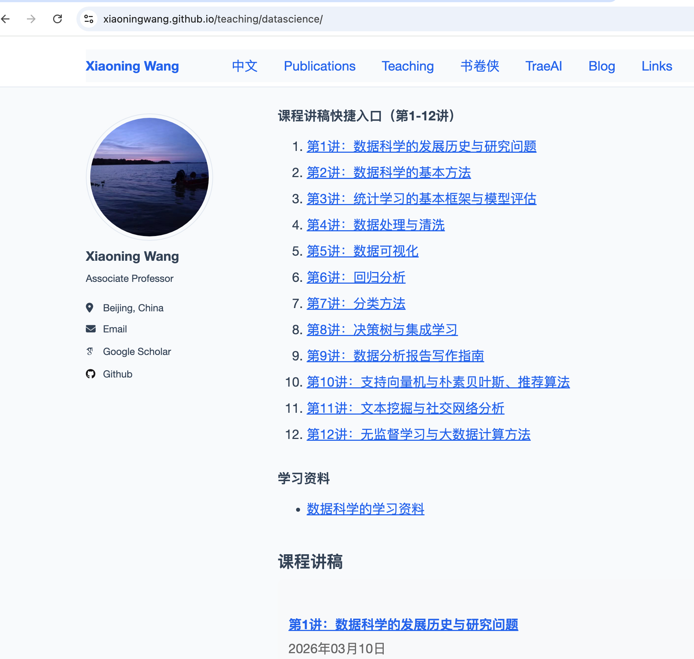
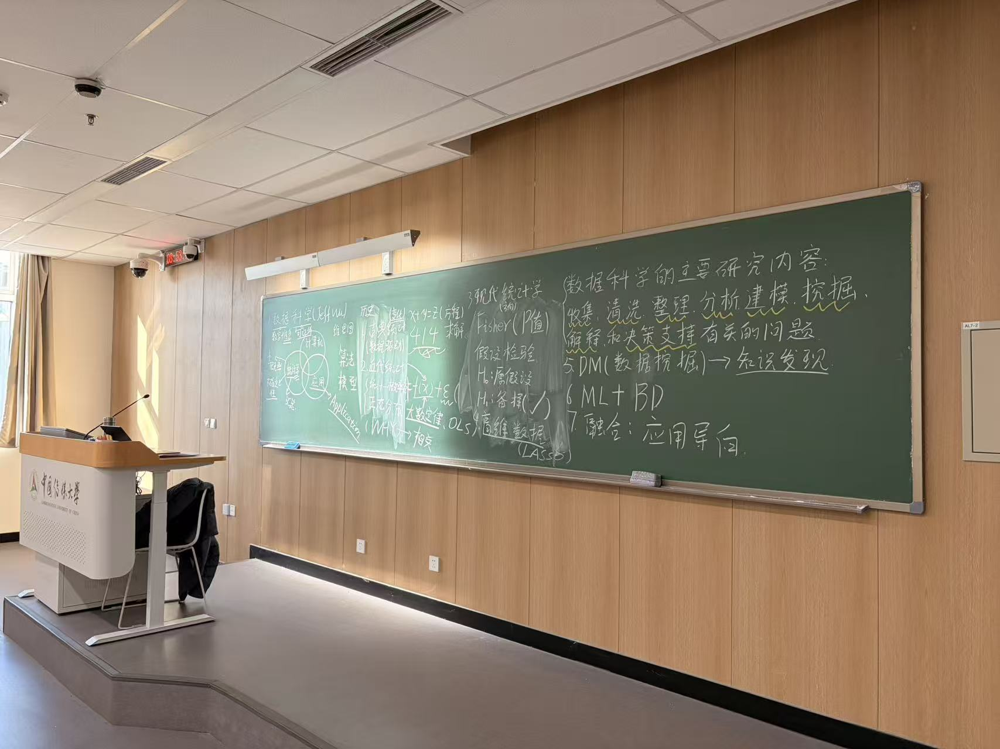
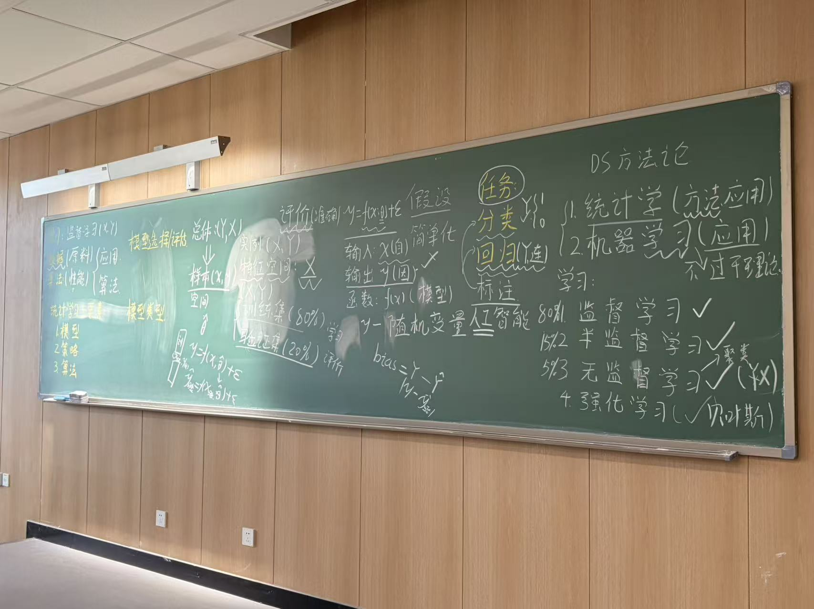
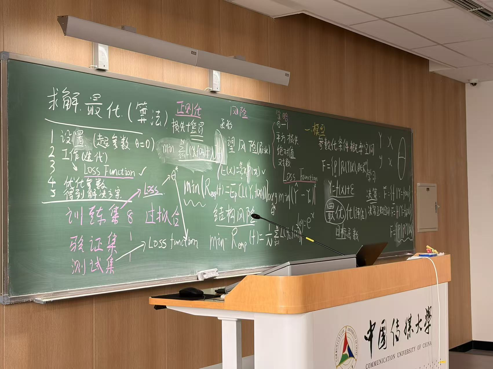
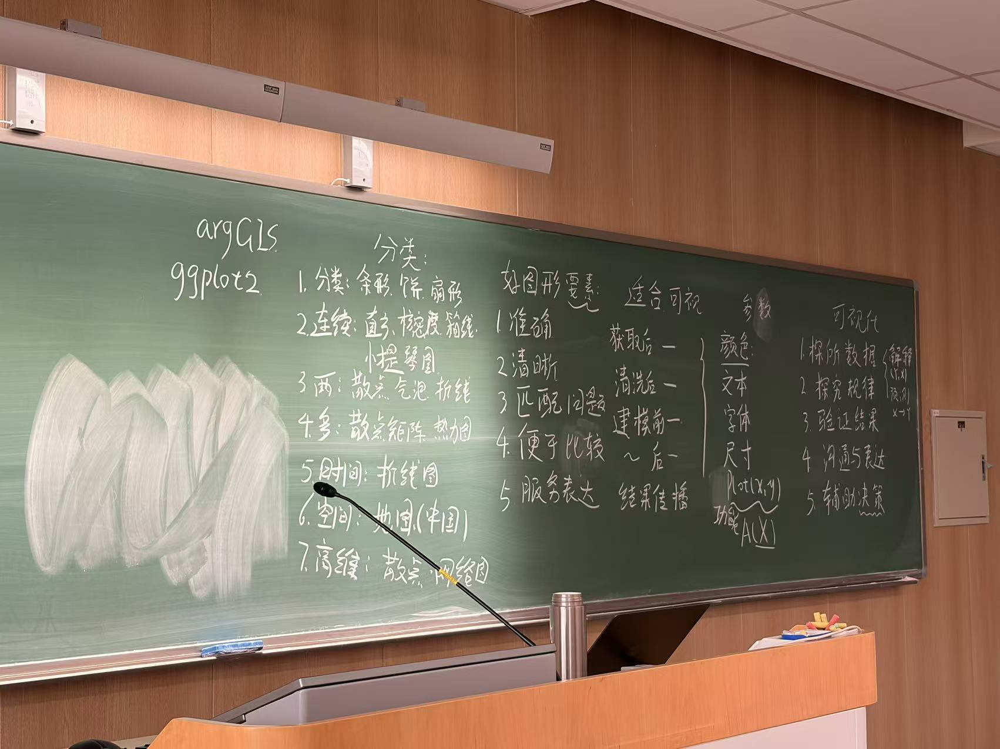
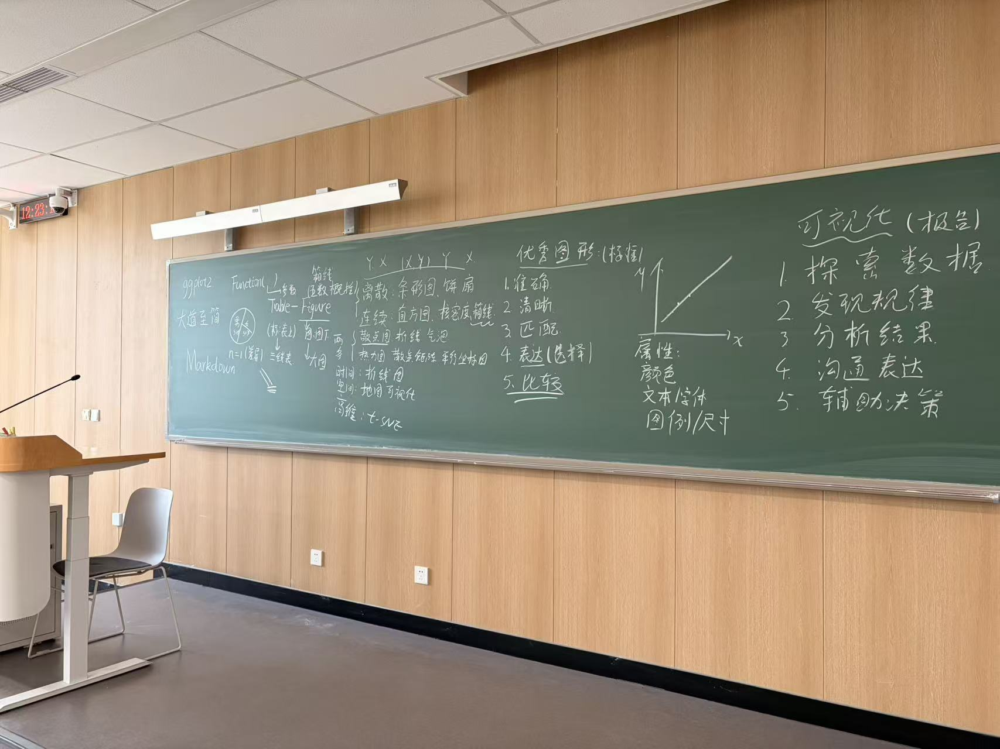
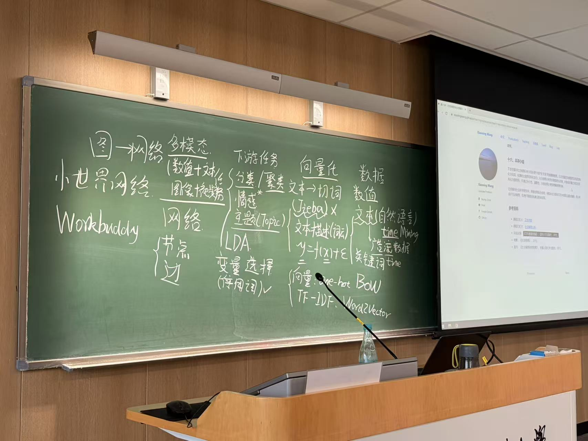
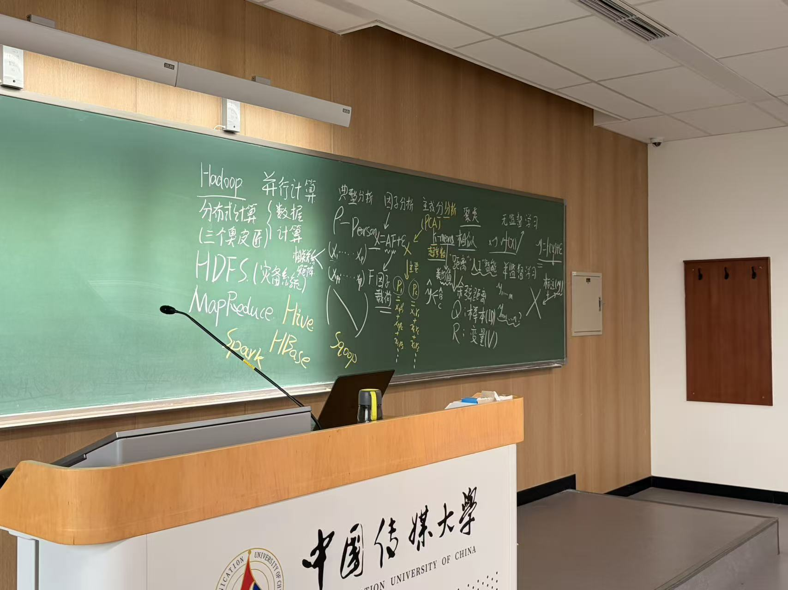
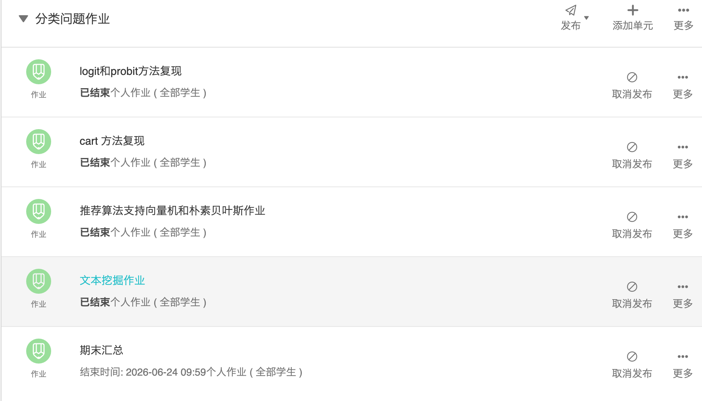

《数据科学导论》本科生课程教改成果
围绕“未来课堂”建设要求，以全程板书、项目制学习、课程讨论、课下作业和 Trae 辅助数据分析为主线，推动本科生从理解数据科学概念走向完成真实数据分析任务。
一、项目概况
《数据科学导论》面向数据科学与大数据技术、计算广告等本科专业开设，是低年级学生进入传媒数据分析、统计学习、文本挖掘和智能应用的重要基础课程。
课程以“传媒数据问题”为牵引，帮助学生理解数据科学的基本框架、数据清洗与可视化方法、监督学习与无监督学习思想、文本分析和推荐算法等内容，并通过期末数据分析报告完成综合应用训练。
二、建设要求对照
根据“未来课堂”建设材料，课程建设需要回应技术赋能、范式转换、价值回归和学习场景拓展四个方向，并落实到本科课堂中的目标、内容、方法和评价改革。
| 建设要求 | 课程回应 | 成果体现 |
|---|---|---|
| 理解传媒大数据的特征、原理、构成和类型 | 通过全程板书梳理“数据科学 Jeff Wu 框架”“统计学与机器学习关系”“传媒数据任务场景”等基础结构。 | 学生能够从数据来源、变量、模型、应用场景四个层面说明数据科学问题。 |
| 掌握数据分析方法和数据可视化技术 | 课堂围绕 ggplot2、图表类型、可视化要素、模型评估和报告表达展开推导与讨论。 | 形成“探索数据、发现规律、分析结果、沟通表达、辅助决策”的可视化训练路径。 |
| 综合运用数据清洗、机器学习、推荐算法、文本挖掘等方法解决具体问题 | 以项目制学习和课下作业为载体，引导学生使用 Trae 完成数据处理、建模、可视化和报告生成任务。 | 期末报告从单点知识考查转向完整数据分析项目，强调问题、数据、方法、结论和建议的闭环。 |
| 范式转换：教师从知识传授者转向学习引导者 | 课堂不只演示代码，而是通过板书推导、讨论提问、任务拆解和项目反馈组织学习。 | 学生在讨论、作业、项目和分享中主动建构知识，形成可迁移的数据分析能力。 |
| 多元评价：过程表现、项目成果和课堂参与共同评价 | 平时作业、课程讨论、项目进展、期中考试与期末报告共同支撑评价。 | 评价重点从“记住概念”拓展到“能否完成真实数据分析任务”。 |
三、改革路径
本科生课程改革围绕“板书建构概念、讨论形成问题、作业巩固方法、项目整合能力、AI 工具提升效率”展开，避免学生只停留在概念记忆或代码复制层面。
全程板书
用黑板呈现统计学习、优化、文本向量化、可视化和报告逻辑，帮助学生看到知识之间的结构关系。
课程讨论
围绕“数据科学为什么发生”“模型为什么有效”“图表如何服务表达”等问题组织课堂互动。
课下作业
将数据清洗、图表制作、模型训练、文本分析和报告写作拆解为阶段性任务，并在课堂中集中讲评与解决。
项目制学习
提前准备多个项目主题，引导学生围绕真实传媒数据完成完整分析报告。
Trae 实践
利用 AI 原生 IDE 辅助代码生成、调试、数据清洗、模型实现和结果解释。
四、主要教改成果
1. 建立低年级本科生可进入的数据科学知识框架
从统计学、数据挖掘、机器学习和传媒应用切入，将抽象方法组织成“问题—数据—模型—应用—报告”的学习框架。
2. 形成全程板书支撑的概念建构课堂
保留黑板推导和结构化板书，帮助学生理解公式、算法、损失函数、可视化原则和报告逻辑，而不是只看幻灯片。
3. 推进项目制学习和真实任务训练
围绕文本分析、社交网络、推荐、可视化、机器学习和报告写作设置项目任务，促使学生在实践中综合运用知识。
4. 引入 Trae 完成数据分析任务
指导学生使用 Trae 辅助完成数据读取、清洗、建模、可视化、错误调试和报告整理，提升完成复杂任务的效率。
5. 形成课堂讨论与课下作业联动机制
课堂讨论用于激活问题意识，课下作业用于巩固方法训练，并通过随堂答疑、代码讲评和问题复盘及时解决共性困难，期末报告用于检验完整数据分析能力。
6. 拓展跨学段智能体学习场景
邀请北京中学八年级学生分享智能体开发进展，使本科生看到更开放的 AI 实践生态和更低门槛的创新路径。
7. 建设可查可复习的课程讲稿体系
在课程主页集中开放第 1-12 讲讲稿入口，覆盖数据科学导论、统计学习、数据清洗、可视化、回归、分类、树模型、报告写作、文本挖掘和无监督学习等内容，方便学生课前预习、课后复盘和项目报告查阅。
五、课堂实施证据
课程现场以黑板为中心组织知识结构，通过板书持续展示统计学习、数据可视化、文本挖掘、网络分析和大数据计算之间的关系。学生在课堂上既能看到公式与算法的推导，也能看到方法如何落到数据分析报告和项目任务中。
同时，课程主页提供第 1-12 讲讲稿快捷入口和完整课程讲稿列表，学生可以随时查阅课堂内容、复习板书对应知识点，并将讲稿作为完成作业、项目制学习和期末报告的支撑材料。








六、AI 数据分析实践：利用 Trae 完成数据任务
课程将 Trae 作为本科生完成数据分析任务的实践工具，而不是单纯作为代码生成器。教学中强调学生先理解问题、变量、方法和评价标准，再借助 Trae 进行代码实现、错误定位和结果整理。
| 任务环节 | 学生训练内容 | Trae 辅助方式 |
|---|---|---|
| 数据读取与清洗 | 识别变量类型、缺失值、异常值、重复记录和编码问题。 | 生成清洗脚本、解释报错原因、辅助检查数据口径。 |
| 可视化探索 | 根据数据类型选择条形图、散点图、箱线图、折线图、热力图等。 | 辅助实现 ggplot2 / Python 可视化代码，并根据图表目标修改样式。 |
| 统计建模 | 完成回归、分类、聚类、文本挖掘或推荐算法等任务。 | 辅助搭建模型流程、调试运行错误、解释关键输出。 |
| 报告写作 | 围绕问题、数据、方法、结果、发现、建议组织报告。 | 辅助整理图表说明、方法说明和结论表达，但要求学生进行事实核验和独立判断。 |
八、评价方式：从考试评价走向过程性、多元评价
课程保留必要的基础知识考查，同时将课堂参与、作业完成、项目进展、工具使用能力和期末报告纳入综合评价，回应未来课堂关于学生主体性和多元评价体系的要求。
期中考试
考查学生对数据科学基础概念、传媒数据分析原理、统计学习框架和可视化基础的理解。
课下作业
围绕数据清洗、图表制作、模型训练、文本处理和报告片段写作进行阶段性训练，分类问题、CART、SVM、朴素贝叶斯、推荐算法和文本挖掘等作业在随堂讲解中完成问题定位与方法复盘。
课堂讨论
评价学生是否能够提出问题、解释模型、比较方法，并将课堂知识迁移到实际场景。
期末报告
要求学生综合运用所学方法解决具体传媒数据问题，形成有数据、有方法、有图表、有结论的分析报告。

九、建设成效
通过本轮教改，《数据科学导论》从以讲授和演示为主的课程，逐步转向“板书建构—任务驱动—项目实践—AI 辅助—报告产出”的本科未来课堂样态。
课程建设在以下方面形成了阶段性成效：学生对数据科学整体框架的理解更加清晰；课堂讨论和课下作业增强了学习连续性；作业随堂解决机制让学生在提交后及时获得反馈，减少了从“不会做”到“放弃做”的断点；Trae 的引入降低了代码实现和调试门槛；项目制学习提升了学生综合处理传媒数据问题的能力；中学生智能体分享扩展了课堂边界，增强了学生对 AI 创新实践的现实感。
- 从“听懂概念”推进到“能够解释方法为什么适用于具体问题”。
- 从“照着代码运行”推进到“能够利用 AI 工具完成清洗、建模和可视化任务”。
- 从“完成一次考试”推进到“完成一份可展示的数据分析报告”。
- 从“单一课堂学习”推进到“跨学段、跨场景、跨工具的开放学习”。
十、下一步建设方向
后续课程将继续围绕未来课堂建设要求推进三方面工作：一是进一步细化 5-6 个项目制学习主题，形成可复用的数据、任务说明、评价标准和优秀案例；二是完善 Trae 辅助数据分析的课堂规范，明确 AI 使用边界、代码核验要求和报告引用规范；三是持续扩展课堂讨论与跨学段分享机制，形成更开放的数据科学学习共同体。
未来将继续探索“小班化编程训练、项目制学习、多元评价、以赛促学”的本科数据科学教学路径，使学生在真实数据任务和智能工具环境中形成面向传媒行业的数据分析能力。
返回顶部